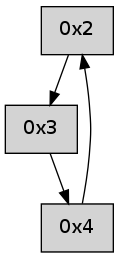

>> << IDX [start] -100 -25 -5 +0 +5 +25 +100 [260.09407115]
 Previous packets
----------------------------------------------------------------------
255.076838 beacon01(adaf) #0 coord=01,02,05,03,04 cycle=368.0ms assoc
-- color-indic=0 64 9f 94
255.086794 beacon02(adaf) #0 coord=01,02,05,03,04 cycle=368.0ms assoc 64 a5 35
255.096794 beacon05(adaf) #0 coord=01,02,05,03,04 cycle=368.0ms assoc 64 ee 79
255.106794 beacon03(adaf) #0 coord=01,02,05,03,04 cycle=368.0ms assoc 64 6d 9f
255.116794 beacon04(adaf) #0 coord=01,02,05,03,04 cycle=368.0ms assoc 64 26 d3
255.128433 [Hello(4): seq=44 sym=3,2 sysInfo= stat=3:1,0,0,0/2:6,0,0,0]
----------------------------------------------------------------------
255.494941 beacon01(adaf) #0 coord=01,02,05,03,04 cycle=368.0ms assoc
-- color-indic=0 64 f7 3f
255.504898 beacon02(adaf) #0 coord=01,02,05,03,04 cycle=368.0ms assoc 64 cd 9e
255.514898 beacon05(adaf) #0 coord=01,02,05,03,04 cycle=368.0ms assoc 64 86 d2
255.524899 beacon03(adaf) #0 coord=01,02,05,03,04 cycle=368.0ms assoc 64 05 34
255.534898 beacon04(adaf) #0 coord=01,02,05,03,04 cycle=368.0ms assoc 64 4e 78
255.546563 [Hello(2): seq=543 sym=3 asym=4 sysInfo= stat=3:3,0,0,0/4:9,0,0,0]
----------------------------------------------------------------------
255.913043 beacon01(adaf) #0 coord=01,02,05,03,04 cycle=368.0ms assoc
-- color-indic=0 64 20 a1
255.923000 beacon02(adaf) #0 coord=01,02,05,03,04 cycle=368.0ms assoc 64 1a 00
255.933000 beacon05(adaf) #0 coord=01,02,05,03,04 cycle=368.0ms assoc 64 51 4c
255.943002 beacon03(adaf) #0 coord=01,02,05,03,04 cycle=368.0ms assoc 64 d2 aa
255.953002 beacon04(adaf) #0 coord=01,02,05,03,04 cycle=368.0ms assoc 64 99 e6
255.964666 [Hello(4): seq=45 sym=2 sysInfo= stat=2:7,0,0,0]
----------------------------------------------------------------------
256.331145 beacon01(adaf) #0 coord=01,02,05,03,04 cycle=368.0ms assoc
-- color-indic=0 64 ca b7
256.341102 beacon02(adaf) #0 coord=01,02,05,03,04 cycle=368.0ms assoc 64 f0 16
256.351102 beacon05(adaf) #0 coord=01,02,05,03,04 cycle=368.0ms assoc 64 bb 5a
256.361102 beacon03(adaf) #0 coord=01,02,05,03,04 cycle=368.0ms assoc 64 38 bc
256.371102 beacon04(adaf) #0 coord=01,02,05,03,04 cycle=368.0ms assoc 64 73 f0
256.382750 [Hello(2): seq=544 sym=3 sysInfo= stat=3:4,0,0,0]
----------------------------------------------------------------------
256.749249 beacon01(adaf) #0 coord=01,02,05,03,04 cycle=368.0ms assoc
-- color-indic=0 64 1d 29
256.759206 beacon02(adaf) #0 coord=01,02,05,03,04 cycle=368.0ms assoc 64 27 88
256.769205 beacon05(adaf) #0 coord=01,02,05,03,04 cycle=368.0ms assoc 64 6c c4
256.779207 beacon03(adaf) #0 coord=01,02,05,03,04 cycle=368.0ms assoc 64 ef 22
256.789207 beacon04(adaf) #0 coord=01,02,05,03,04 cycle=368.0ms assoc 64 a4 6e
256.800832 [Hello(4): seq=46 sym=2 sysInfo= stat=2:8,0,0,0]
----------------------------------------------------------------------
257.167351 beacon01(adaf) #0 coord=01,02,05,03,04 cycle=368.0ms assoc
-- color-indic=0 64 75 82
257.177308 beacon02(adaf) #0 coord=01,02,05,03,04 cycle=368.0ms assoc 64 4f 23
257.187308 beacon05(adaf) #0 coord=01,02,05,03,04 cycle=368.0ms assoc 64 04 6f
257.197310 beacon03(adaf) #0 coord=01,02,05,03,04 cycle=368.0ms assoc 64 87 89
257.207309 beacon04(adaf) #0 coord=01,02,05,03,04 cycle=368.0ms assoc 64 cc c5
257.218929 [Hello(2): seq=545 sym=3 sysInfo= stat=3:5,0,0,0]
----------------------------------------------------------------------
257.585456 beacon01(adaf) #0 coord=01,02,05,03,04 cycle=368.0ms assoc
-- color-indic=0 64 a2 1c
257.595412 beacon02(adaf) #0 coord=01,02,05,03,04 cycle=368.0ms assoc 64 98 bd
257.605414 beacon05(adaf) #0 coord=01,02,05,03,04 cycle=368.0ms assoc 64 d3 f1
257.615413 beacon03(adaf) #0 coord=01,02,05,03,04 cycle=368.0ms assoc 64 50 17
257.625413 beacon04(adaf) #0 coord=01,02,05,03,04 cycle=368.0ms assoc 64 1b 5b
257.637039 [Hello(4): seq=47 sym=2 sysInfo= stat=2:9,0,0,0]
----------------------------------------------------------------------
258.003559 beacon01(adaf) #0 coord=01,02,05,03,04 cycle=368.0ms assoc
-- color-indic=0 64 b4 dc
258.013515 beacon02(adaf) #0 coord=01,02,05,03,04 cycle=368.0ms assoc 64 8e 7d
258.023517 beacon05(adaf) #0 coord=01,02,05,03,04 cycle=368.0ms assoc 64 c5 31
258.033516 beacon03(adaf) #0 coord=01,02,05,03,04 cycle=368.0ms assoc 64 46 d7
258.043516 beacon04(adaf) #0 coord=01,02,05,03,04 cycle=368.0ms assoc 64 0d 9b
258.055156 [Hello(2): seq=546 sym=3 sysInfo= stat=3:6,0,0,0]
----------------------------------------------------------------------
258.421661 beacon01(adaf) #0 coord=01,02,05,03,04 cycle=368.0ms assoc
-- color-indic=0 64 63 42
258.431619 beacon02(adaf) #0 coord=01,02,05,03,04 cycle=368.0ms assoc 64 59 e3
258.441618 beacon05(adaf) #0 coord=01,02,05,03,04 cycle=368.0ms assoc 64 12 af
258.451618 beacon03(adaf) #0 coord=01,02,05,03,04 cycle=368.0ms assoc 64 91 49
258.461619 beacon04(adaf) #0 coord=01,02,05,03,04 cycle=368.0ms assoc 64 da 05
258.473246 [Hello(4): seq=48 sym=2 sysInfo= stat=2:10,0,0,0]
----------------------------------------------------------------------
258.839763 beacon01(adaf) #0 coord=01,02,05,03,04 cycle=368.0ms assoc
-- color-indic=0 64 0b e9
258.849719 beacon02(adaf) #0 coord=01,02,05,03,04 cycle=368.0ms assoc 64 31 48
258.859720 beacon05(adaf) #0 coord=01,02,05,03,04 cycle=368.0ms assoc 64 7a 04
258.869720 beacon03(adaf) #0 coord=01,02,05,03,04 cycle=368.0ms assoc 64 f9 e2
258.879721 beacon04(adaf) #0 coord=01,02,05,03,04 cycle=368.0ms assoc 64 b2 ae
258.891363 [Hello(2): seq=547 sym=3 sysInfo= stat=3:6,0,0,0]
----------------------------------------------------------------------
259.257865 beacon01(adaf) #0 coord=01,02,05,03,04 cycle=368.0ms assoc
-- color-indic=0 64 dc 77
259.267821 beacon02(adaf) #0 coord=01,02,05,03,04 cycle=368.0ms assoc 64 e6 d6
259.277821 beacon05(adaf) #0 coord=01,02,05,03,04 cycle=368.0ms assoc 64 ad 9a
259.287822 beacon03(adaf) #0 coord=01,02,05,03,04 cycle=368.0ms assoc 64 2e 7c
259.297822 beacon04(adaf) #0 coord=01,02,05,03,04 cycle=368.0ms assoc 64 65 30
259.309449 [Hello(4): seq=49 sym=2 sysInfo= stat=2:11,0,0,0]
----------------------------------------------------------------------
259.675967 beacon01(adaf) #0 coord=01,02,05,03,04 cycle=368.0ms assoc
-- color-indic=0 64 1c 87
259.685923 beacon02(adaf) #0 coord=01,02,05,03,04 cycle=368.0ms assoc 64 26 26
259.695923 beacon05(adaf) #0 coord=01,02,05,03,04 cycle=368.0ms assoc 64 6d 6a
259.705924 beacon03(adaf) #0 coord=01,02,05,03,04 cycle=368.0ms assoc 64 ee 8c
259.715923 beacon04(adaf) #0 coord=01,02,05,03,04 cycle=368.0ms assoc 64 a5 c0
259.727554 [Hello(2): seq=548 sym=3 sysInfo= stat=3:6,0,0,0]